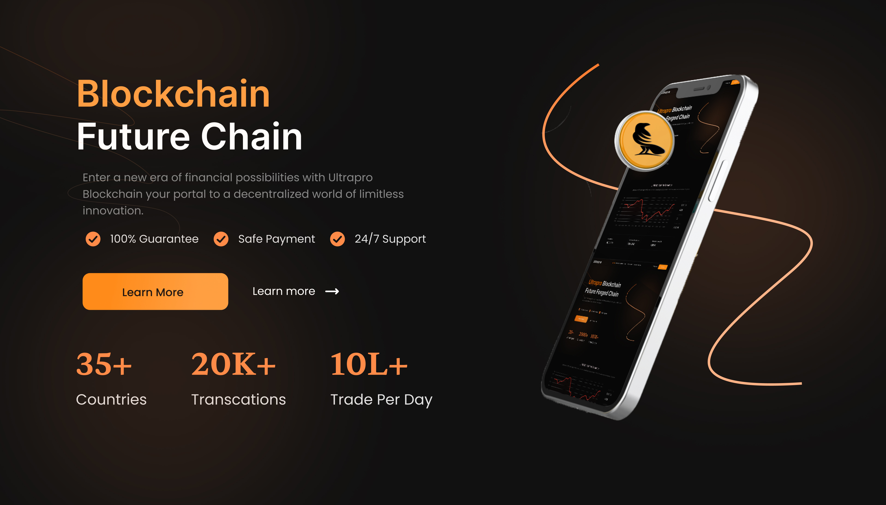

Case study
Crypto Exchange for Web and Mobile Application
A user-friendly mobile crypto exchange app designed for both beginners and experienced traders.It offers simplified trading, real-time portfolio tracking, and secure transactions.Key features include Quick Trade, referral rewards, staking, and seasonal bonanza offers.
Featured case study
- Client: Ultrapro Exchange
- Industry: Cryptocurrency
- Use case: Automating financial reporting & real-time analytics

Project Overview
As cryptocurrency adoption continues to rise globally, so does the need for user-friendly exchange platforms. My latest UX design project focused on developing a mobile-first crypto exchange application that simplifies complex trading functions for both beginners and seasoned crypto investors. With an emphasis on accessibility, trust, and transparency, this app aims to redefine how users interact with digital assets on the go.
Problem Statement
Many existing crypto exchange apps are overly complex, intimidating to beginners, and lack intuitive navigation. This complexity creates a barrier for entry-level investors and often results in poor user retention.
The challenge
VelocityFinance was managing its financial operations manually, using a combination of spreadsheets and disconnected tools. Their reporting process was slow, error-prone, and difficult to scale.
Goals
-
Simplify crypto trading for first-time users without compromising essential features.
-
Build user trust through clean interfaces, transparency, and onboarding education.
-
Enhance overall engagement with personalized dashboards and real-time data insights.
The Solution
NextSaaS helped them:
-
Set up real-time dashboards with custom financial KPIs
-
Automate monthly reporting for leadership and investors
-
Integrate their accounting tools and CRM into one platform
The results
NextSaaS helped them:
-
82% reduction in reporting time
-
95% accuracy increase across all financial statements
-
4x faster decision-making during strategic reviews